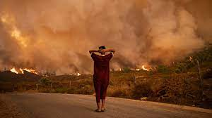

Climate Change
May 20, 2022 by National Geographic

Climate change is sometimes mistaken for weather. But climate is different from weather because it is measured over a long period of time, whereas weather can change from day to day, or from year to year. The climate of an area includes seasonal temperature and rainfall averages, and wind patterns. Different places have different climates. A desert, for example, is referred to as an arid climate because little water falls, as rain or snow, during the year.
Climate change is the long-term alteration of temperature and typical weather patterns in a place. Climate change could refer to a particular location or the planet as a whole. Climate change may cause weather patterns to be less predictable. These unexpected weather patterns can make it difficult to maintain and grow crops in regions that rely on farming because expected temperatures and rainfall levels can no longer be relied on. Climate change has also been connected with other damaging weather events such as frequent and more intense hurricanes,floods, downpours,and winter storms,
The Effects of Climate Change
September 30, 2022 by NASA
The severity of effects caused by climate change will depend on the path of future human activities. More greenhouse gas emissions will lead to more climate extremes and widespread damaging effects across our planet. However, those future effects depend on the amount of carbon dioxide we emit.
Some changes(such as droughts, wildfires, and extreme rainfall) are happening faster than scientists previously assessed. The United Nations body established to assess the science related to climate change-modern humans have never before seen the observed changes in our global climate, and some of these changes are irreversible over the next hundreds to thousands of years.